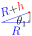
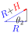
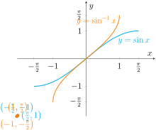
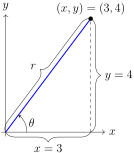
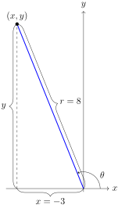

Section 2.4 Inverse Trigonometric Functions
When Mau Pialug sailed to his home on the Makali`i in 1999, the people of Satawal, Micronesia were impressed with such a large waʻa. As a gift to the man who shared his knowledge of navigation, Nā Kālai Waʻa at Kawaihae Harbor built a 56-foot long double-hulled voyaging canoe called the Alingano Maisu. In 2007, the Alingano Maisu, accompanied by the Hōkūleʻa, embarked on her maiden voyage to her new home in Satawal so Papa Mau can carry on his legacy of navigation in his home islands. Leaving Hawai`i, Hōkūleʻa led the way to Johnston Atoll. From there, the Alingano Maisu took the lead as they entered Micronesia by first stopping at Majuro, Marshall Islands before continuing on to her new home in Satawal. It is known that the island of Majuro is 1,108 nautical miles to the east and 575 nautical miles to the south of Johnston Atoll. What house do you need to sail towards and what distance will you need to sail? If the waʻa travels at 5 knots, how many days will it take to reach the destination? Note that 1 knot = 1 nautical mile/hour.
You may notice that for our given angle, \(\theta\text{,}\) we have the opposite side, 575 NM, and the adjacent side, 1,100 NM, which are all related with the tangent function
Up until now, we were given the angles for the trigonometric problems we've encountered. To solve for the angle \(\theta\text{,}\) we cannot simply divide by “tan” because it is part of the tangent function where we input an angle and the output is a ratio of sides. Instead, we will need to use the inverse function in which we input the ratio of sides and output an angle.
Subsection 2.4.1 Inverse Trigonometric Functions
Recall (from Unit 1) that for a function \(f\) and its inverse function \(f^{-1}\)
The Domain of \(f^{-1}=\) Range of \(f\)
The Range of \(f^{-1}=\) Domain of \(f\)
If \(f(a)=b\) then \(f^{-1}(b)=a\)
In terms of trigonometric functions, for example, if \(f(x)=\sin x\) then \(f^{-1}(x)=\sin^{-1}x\text{.}\) Now consider \(\sin\left(\frac{\pi}{4}\right)=\frac{\sqrt{2}}{2}\text{,}\) then \(\frac{\pi}{4}=\sin^{-1}\left(\frac{\sqrt{2}}{2}\right)\text{.}\) \begin{mybox}[Be Careful] Do not confuse the inverse trigonometric notations with an exponent, in other words, \(\sin^{-1}x\neq\frac{1}{\sin x}\text{.}\) To avoid this, we will use parentheses around the trigonometric function to denote the power of negative one: \((\sin x)^{-1}\text{.}\) \end{mybox}
Also recall (from Unit 1) that for a function, \(f\text{,}\) to have an inverse, \(f^{-1}\text{,}\) it must be one-to-one, meaning no horizontal line intersects the graph more than once. Since this is not true for trigonometric functions, they do not have inverses. We need functions to be one-to-one because both \(\sin\frac{\pi}{4}=\frac{\sqrt{2}}{2}\) and \(\sin\frac{3\pi}{4}=\frac{\sqrt{2}}{2}\) but if we took the inverse of sine, would we wouldn't know to use \(\sin^{-1}\left(\frac{\sqrt{2}}{2}\right)=\frac{\pi}{4}\) or \(\sin^{-1}\left(\frac{\sqrt{2}}{2}\right)=\frac{3\pi}{4}\text{.}\) To avoid this confusion and to ensure the function is one-to-one, we can put restrictions on the domains of each trigonometric function so they attain all the values in the range only once, making the function one-to-one, and thus have an inverse (see Figure 2.4.1).
We will restrict the domain of \(y=\sin x\) to the interval \([-\frac{\pi}{2},\frac{\pi}{2}]\text{,}\) the domain of \(y=\cos x\) to \([0,\pi]\text{,}\) and the domain of \(y=\tan x\) to the interval \((-\frac{\pi}{2},\frac{\pi}{2})\text{.}\) Notice that the domain for each trigonometric function includes one quadrant where the function is positive and one quadrant where it is negative.
Domain of \(y=\sin x\text{:}\)
The graph of sine for the restricted domain
Domain of \(y=\cos x\text{:}\)
The graph of cosine for the restricted domain
Domain of \(y=\tan x\text{:}\)
The graph of tangent for the restricted domain

With these new restrictions on the domains, we now have trigonometric functions that are one-to-one and so we can define their inverse functions:
\begin{mybox}[Inverse Sine] The inverse sine function is symbolized by
The inverse sine function is also called the arcsine function, and is denoted by \(\arcsin x\text{.}\) \end{mybox}
\begin{mybox}[Inverse Cosine] The inverse cosine function is symbolized by
The inverse cosine function is also called the arccosine function, and is denoted by \(\arccos x\text{.}\) \end{mybox}
\begin{mybox}[Inverse Tangent] The inverse tangent function is symbolized by
The inverse tangent function is also called the arctangent function, and is denoted by \(\arctan x\text{.}\) \end{mybox} \begin{mybox}[Inverse Cosecant, Secant, and Cotangent] Inverse cosecant, inverse secant, and inverse cotangent functions are not as common as the other trigonometric functions so we will just summarize them and not consider any examples in this book.
\end{mybox} \begin{mybox}[Domain and Range] The domain and range for each function is
| Function | Domain | Range |
| \(\sin^{-1}\) | \([-1,1]\) | \(\left[-\frac{\pi}{2},\frac{\pi}{2}\right]\) |
| \(\cos^{-1}\) | \([-1,1]\) | \([0,\pi]\) |
| \(\tan^{-1}\) | \([-\infty,\infty]\) | \(\left(-\frac{\pi}{2},\frac{\pi}{2}\right)\) |
| \(\csc^{-1}\) | \((-\infty,-1]\cup[1,\infty)\) | \(\left[-\frac{\pi}{2},\frac{\pi}{2}\right],y\neq0\) |
| \(\sec^{-1}\) | \((-\infty,-1]\cup[1,\infty)\) | \([0,\pi],y\neq\frac{\pi}{2}\) |
| \(\cot^{-1}\) | \((-\infty,\infty)\) | \((0,\pi)\) |
\end{mybox}
Subsection 2.4.2 Finding the Exact Value of an Inverse Trigonometric Function
Example 2.4.2.
Find the exact value.
\(\displaystyle \cos^{-1}\frac{1}{2}\)
\(\displaystyle \tan^{-1}\sqrt{3}\)
\(\displaystyle \sin^{-1}\left(-\frac{\sqrt{2}}{2}\right)\)
-
Let \(\theta=\cos^{-1}\frac{1}{2}\text{.}\) Then evaluating the problem is the same as determining the angle, \(\theta\text{,}\) for which
\begin{equation*} \cos\theta=\frac{1}{2}\text{.} \end{equation*}Although there are infinite values of \(\theta\) that satisfy the equation, such as \(\theta=\frac{\pi}{3}\) and \(\theta=\frac{5\pi}{3}\text{,}\) there is only one value that lies in the interval \([0,\pi]\text{.}\) Thus, \(\cos^{-1}\frac{1}{2}=\frac{\pi}{3}\text{.}\)
Let \(\theta=\tan^{-1}\sqrt{3}\text{.}\) Then we must find \(\theta\) that satisfies \(\tan\theta=\sqrt{3}\) as well as satisfies the range of \(\tan^{-1}\text{.}\) Because \(\tan\frac{\pi}{3}=\sqrt{3}\) and \(-\frac{\pi}{2}\lt \frac{\pi}{3}\lt \frac{\pi}{2}\text{,}\) we conclude that \(\tan^{-1}\sqrt{3}=\frac{\pi}{3}\text{.}\)
The angle, \(\theta\text{,}\) in the interval \([-\frac{\pi}{2},\frac{\pi}{2}]\) that satisfies \(\sin\theta=-\frac{\sqrt{2}}{2}\) is \(\theta=\sin^{-1}\left(-\frac{\sqrt{2}}{2}\right)=-\frac{\pi}{4}\text{.}\)
Subsection 2.4.3 Approximations of Inverse Trigonometric Functions
To evaluate inverse trigonometric functions that do not have special angles, we will need to use a calculator. \begin{mybox}[Using a Calculator] Using a calculator for inverse trigonometric functions: Most calculators will have a special button for the inverse sine, cosine, and tangent functions. Depending on your calculator, you may see the following keys for inverse the inverse trigonometric functions
| Function | Calculator Key |
| inverse sine | SIN\(^{-1}\), ARCSIN, or ASIN |
| inverse cosine | COS\(^{-1}\), ARCCOS, or ACOS |
| inverse tangent | TAN\(^{-1}\), ARCTAN, or ATAN |
\end{mybox}
Example 2.4.3. A gift for Mau.
We are now ready to return to the example at the start of this section.

Since we were able to write \(\tan\theta=\frac{575}{1,108}\text{,}\) we can use a calculator or other technology to evaluate the inverse tangent to find our angle:
Because this angle is in Quadrant III, we find its value on the Unit Circle by adding \(180^{\circ}+27.4^{\circ}=207.4^{\circ}\text{.}\) Next we refer to the Star Compass with angles (Figure 1.2.4 on page 1.2.4) to conclude we will need to sail towards the House ʻĀina Kona.
To determine the distance, \(d\text{,}\) we use the Pythagorean Theorem:
Finally, we note that since (speed) = (distance)/(duration), we can rearrange the terms to get (duration) = (distance)/(speed). If we travel at 5 knots (5 NM/hr), we can calculate the duration as
Example 2.4.4. Finding Land.
As Hōkūle‘a is sailing towards Rapa Nui, the navigator uses a process called dead reckoning to determine their position based on the latitude, measured by the stars, and other factors such as the estimated distance traveled, speed, and direction. Once the navigator has determined they are in the vicinity of land, her attention is now focused on looking for signs of land. One method navigators will use is to look for land-based seabirds such as the manu-o-kū (fairy tern) and the noio (noddy tern), which go out to sea in the morning to fish and return to land at night. However, Rapa Nui’s seabird population has been reduced so she will look for other signs such as drifting land vegetation; clouds that form over islands; the loom of the island when white sand and still lagoons reflect the sun or moon upwards; and distinctive patterns of swells bending (refracting) around and / or reflecting off islands. Land will be spotted when the navigator first sees Maunga Terevaka, the tallest point in Rapa Nui, which stands at 1,665 ft.
On the deck of Hōkūleʻa, a navigator stands at 9 ft above sea level. If she looks out to the sea, how far is she from horizon? Assume the radius of the earth at Rapa Nui is 3,960.449 miles.
How far is Hōkūleʻa from Maunga Terevaka when it first becomes visible over the horizon to someone standing 9ft above sea level?
-
We begin by assuming that the earth is a sphere with radius \(R\text{.}\) Standing on Hōkūle‘a, the line from the navigator’s eye to the horizon is tangent to the circle of radius \(R\text{.}\)
Here \(h=9\) ft, represents the height of the navigator's eye above sea level, \(R=3,960.449\) miles (20,911,171 ft) is the radius of the earth at Rapa Nui, and \(s_1\) is the arc length or distance along the surface of the earth from the navigator to the horizon. We have written the distances in feet since the height of the navigator is in feet. Recall from Theorem 1.2.18 the formula for finding the arc length is \(s_1=2\pi R\cdot\left(\frac{\theta_1}{360}\right)\text{.}\) Since we know \(R\text{,}\) we only need to find \(\theta_1\text{.}\) Notice this forms a right triangle.Since we know the adjacent side and hypotenuse of this triangle, we can use cosine: \begin{equation*} \cos\theta_1=\frac{R}{R+h}=\frac{20,911,171}{20,911,171+9}=\frac{20,911,171}{20,911,180}\text{.} \end{equation*}
\begin{equation*} \cos\theta_1=\frac{R}{R+h}=\frac{20,911,171}{20,911,171+9}=\frac{20,911,171}{20,911,180}\text{.} \end{equation*}To solve for \(\theta_1\text{,}\) we use the inverse cosine
\begin{equation*} \theta_1=\cos^{-1}\left(\frac{20,911,171}{20,911,180}\right)\approx0.053^{\circ}\text{.} \end{equation*}Now we are ready to calculate the arc length, \(s_1\text{.}\) To give our answer in miles, we will use \(R=3,960.449\) miles and calculate the following
\begin{equation*} s_1=2\pi\cdot\frac{0.053^{\circ}}{360^{\circ}}\cdot3,960.449\approx3.7\mbox{ miles} \end{equation*}So the horizon is 3.7 miles from the navigator.
-
Next, to determine how far the navigator is from Maunga Terevaka when it emerges over the horizon, we need to align the top of the mountain with line from the navigator's eye to the horizon.
Here, \(H=1,665\) ft, is the height of Maunga Terevaka. To find the distance from the top of the mountain to the horizon, we will need to determine \(s_2\text{.}\) We begin by redrawing the triangle.The angle is then given by\begin{equation*} \theta_1=\cos^{-1}\left(\frac{R}{R+H}\right)=\cos^{-1}\left(\frac{20,911,171}{20,911,173+1,665}\right)=\cos^{-1}\left(\frac{20,911,171}{20,912,836}\right)\approx0.723^{\circ} \end{equation*}We conclude that the distance from Maunga Terevaka to the horizon is
\begin{equation*} s_2=2\pi\cdot\frac{0.723^{\circ}}{360^{\circ}}\cdot3,960.449\approx50.0\mbox{ miles} \end{equation*}Therefore, the total distance between the navigator and Maunga Terevaka is \(s_1+s_2=3.7+50.0=53.7\) miles. Please note that this is the distance when the island may first be seen, however, weather conditions may reduce visibility.
Subsection 2.4.4 Graphs of Inverse Trigonometric Functions
Recall from Unit 1 that
The point \((a,b)\) is on the graph of \(f\) if and only if the point \((b,a)\) is on the graph of \(f^{-1}\)
The graphs of \(f^{-1}\) and \(f\) are reflections of each other about the line \(y=x\)
The graph of each inverse trigonometric function can be obtained by reflecting the graph of the original function about the line \(y=x\text{.}\)
Subsection 2.4.5 Composition of Inverse Trigonometric Functions
Recall (from Unit 1) that if \(f\) is a one-to-one function with inverse \(f^{-1}\text{,}\) then
\(f(f^{-1}(y))=y\) for every \(y\) in the domain of \(f^{-1}\)
\(f^{-1}(f(x))=x\) for every \(x\) in the domain of \(f\)
In terms of trigonometric functions, \(f(f^{-1}(y))=y\) will work for all \(y\) in the domain, however, we need to be careful when evaluating \(f^{-1}(f(x))=x\) because the domain of \(f^{-1}\) is restricted.
\begin{mybox}[Properties of Composition of Trigonometric Functions]
\end{mybox}
Example 2.4.5.
Find the exact value of each expression
\(\displaystyle \cos^{-1}\left(\cos\frac{\pi}{8}\right)\)
\(\displaystyle \tan(\tan^{-1}7)\)
\(\displaystyle \sin^{-1}\left(\sin\left(-\frac{\pi}{7}\right)\right)\)
\(\displaystyle \sin^{-1}\left(\sin\frac{4\pi}{5}\right)\)
\(\displaystyle \cos(\cos^{-1}(-0.283))\)
-
Since \(\frac{\pi}{8}\) is in the interval \([0,\pi]\text{,}\) then from the properties of compositions of inverse functions, we get
\begin{equation*} \cos^{-1}\left(\cos\frac{\pi}{8}\right)=\frac{\pi}{8} \end{equation*} -
Since \(7\) is in the interval \((-\infty,\infty)\text{,}\)
\begin{equation*} \tan(\tan^{-1}7)=7 \end{equation*} -
Since \(-\frac{\pi}{7}\) is in the interval \(\left[-\frac{\pi}{2},\frac{\pi}{2}\right]\text{,}\)
\begin{equation*} \sin^{-1}\left(\sin\left(-\frac{\pi}{7}\right)\right)=-\frac{\pi}{7} \end{equation*} -
Note that \(\frac{5\pi}{7}\) is not in the interval \(\left[-\frac{\pi}{2},\frac{\pi}{2}\right]\text{.}\) In order to evaluate the expression, we first need to find an angle, \(\theta\text{,}\) such that \(-\frac{\pi}{2}\leq\theta\leq\frac{\pi}{2}\) and \(\sin\frac{5\pi}{7}=\sin\theta\text{.}\) Since \(\frac{\pi}{2}\lt \frac{5\pi}{7}\lt \pi\) means \(\frac{5\pi}{7}\) is in Quadrant II. Recall from
[cross-reference to target(s) "sec_unit-circle" missing or not unique]that our reference angle is \(\theta=\pi-\frac{5\pi}{7}=\frac{2\pi}{7}\text{.}\)Since \(\frac{2\pi}{7}\) is in the interval \(\left[-\frac{\pi}{2},\frac{\pi}{2}\right]\text{,}\)\begin{equation*} \sin^{-1}\left(\sin\frac{5\pi}{7}\right)=\sin^{-1}\left(\sin\frac{2\pi}{7}\right)=\frac{2\pi}{7} \end{equation*} -
Since \(-0.283\) is in the interval \([-1,1]\text{,}\)
\begin{equation*} \cos(\cos^{-1}(-0.283))=-0.283 \end{equation*}
Now we will look at what happens when we need to evaluate the composition of a trigonometric function and the inverse of a different trigonometric function.
Example 2.4.6.
Find the exact value of
\(\displaystyle \cos\left(\tan^{-1}\frac{4}{3}\right)\)
\(\displaystyle \sin\left(\cos^{-1}\left(-\frac{3}{8}\right)\right)\)
-
Let \(\theta\) be an angle in the range of \(\tan^{-1}\text{,}\) that is, let \(\theta\) be in the interval \(\left(-\frac{\pi}{2},\frac{\pi}{2}\right)\) such that \(\theta=\tan^{-1}\frac{4}{3}\text{.}\) This equation is equivalent to \(\tan\theta=\frac{4}{3}\text{.}\) Since \(\tan\theta>0\text{,}\) we know that \(\theta\) must be in Quadrant I \(\left(0\lt \theta\lt \frac{\pi}{2}\right)\text{.}\) Let \((x,y)\) be a point on the terminal side of \(\theta\text{,}\) then by the trigonometric ratios,
\begin{equation*} \tan\theta=\frac{\mbox{opposite} }{\mbox{adjacent} }=\frac{y}{x} \end{equation*}Since we have \(\tan\theta=\frac{4}{3}\text{,}\) we get \(x=3\) and \(y=4\text{,}\) as shown in the figure below.
Evaluating \(\cos\left(\tan^{-1}\frac{4}{3}\right)\) is equivalent to evaluating\begin{equation*} \cos\theta=\frac{\mbox{adjacent} }{\mbox{hypotenuse} }=\frac{3}{r}\text{,} \end{equation*}where \(r=\sqrt{x^2+y^2}=\sqrt{3^2+4^2}=\sqrt{9+16}=\sqrt{25}=5\text{.}\) So,
\begin{equation*} \cos\left(\tan^{-1}\frac{4}{3}\right)=\cos\theta=\frac{3}{5} \end{equation*} -
Let \(\theta\) be an angle in the range of \(\cos^{-1}\text{,}\) that is, let \(\theta\) be in the interval \(\left[0,\pi\right]\) such that \(\theta=\cos^{-1}\left(-\frac{3}{8}\right)\text{.}\) This equation is equivalent to \(\cos\theta=-\frac{3}{8}\text{.}\) Since \(\cos\theta\lt 0\text{,}\) we know that \(\theta\) must be in Quadrant II \(\left(\frac{\pi}{2}\leq\theta\leq\pi\right)\text{.}\) Let \((x,y)\) be a point on the terminal side of \(\theta\text{,}\) then by the trigonometric ratios,
\begin{equation*} \cos\theta=\frac{\mbox{adjacent} }{\mbox{hypotenuse} }=\frac{x}{r} \end{equation*}Since we have \(\cos\theta=-\frac{3}{8}\text{,}\) we get \(\frac{x}{r}=-\frac{3}{8}\) which gives us either \(x=-3\) and \(r=8\) or \(x=3\) and \(r=-8\text{.}\) Since \(\theta\) is in Quadrant II, we know that \(x\) is negative, thus \(x=-3\) and \(r=8\text{,}\) as shown in the figure below.
Evaluating \(\sin\left(\cos^{-1}\left(-\frac{3}{8}\right)\right)\) is equivalent to evaluating \begin{equation*} \sin\theta=\frac{\mbox{opposite} }{\mbox{hypotenuse} }=\frac{y}{8}\text{,} \end{equation*}
\begin{equation*} \sin\theta=\frac{\mbox{opposite} }{\mbox{hypotenuse} }=\frac{y}{8}\text{,} \end{equation*}where
\begin{align*} r^2\amp =\amp x^2+y^2\\ 8^2\amp =\amp (-3)^2+y^2\\ 64\amp =\amp 9+y^2\\ y^2\amp =\amp 55 \end{align*}Thus \(y=\sqrt{55}\text{.}\) So,
\begin{equation*} \sin\left(\cos^{-1}\frac{-3}{8}\right)=\sin\theta=\frac{\sqrt{55}}{8} \end{equation*}Note this is positive since sine is positive in Quadrant II.
Checkpoint 2.4.7.
(Sunrise on Mauna Kea) The summit of Mauna Kea is the highest point in Hawai`i and sits 13,803 ft above the sea level. If you stand at the summit, you will be able to see the sun rise before someone standing at the sea level just north or south of Mauna Kea (at the same latitude). In fact, you will see the sunrise at the same time as someone at sea level sailing in a wa‘a to the east of Mauna Kea. \begin{tasks} \task How far is the horizon when someone 5 ft tall stands on the summit to watch the sun rise? \task How much faster will you see the sun rise than someone standing nearby at sea level? Hint: the ratio of your previous answer to the circumference of the Earth is equal to the ratio of the time to the 24 hours in Earth’s rotation. \end{tasks} It turns out you will see the sunrise 8.33 mins before someone at the sea level.
\Question Sunrise on Haleakalā
According to moʻolelo, or legend, the sun traveled very fast across the sky, leaving people with days so short there was not enough time to carry on with their daily lives. Determined to slow the sun, the demigod Maui climbed to the summit of Haleakalā, which stands at 10,023 feet, to snare the sun. Assume the radius of the earth is at Haleakalā is 3961.527 miles.
\begin{tasks} \task How far is the horizon when Maui stands at the summit? Assume Maui's eyes are 5 ft from the ground. \task How much faster would Maui see the sun emerge over the horizon than someone 5 ft tall and standing at the seashore? \end{tasks}
\begin{Answer}[ref={ex-2.4}] \Question dafdf \begin{tasks} \task Answer 1a \task Answer 1b \end{tasks} \Question \begin{tasks} \task Answer 2a \task Answer 2b \end{tasks}
\end{Answer}